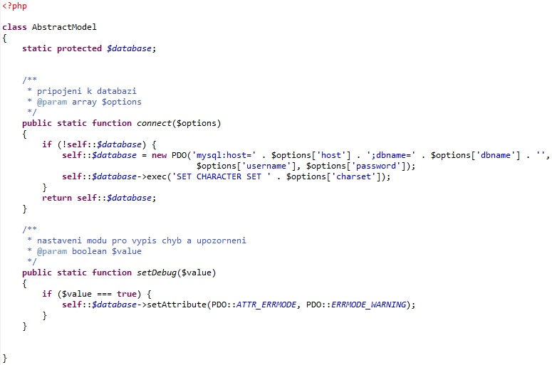

Dnes si ukážeme, jakým způsobem můžeme přistupovat k databázi. Využijeme k tomu PDO rozhraní (PHP Data Objects), které s sebou přineslo PHP 5.1.
Zde máme aspoň základní přehled toho, co nám PDO nabízí:
Nyní se vrátíme k předchozímu příkladu, který si upravíme tak, abychom využili PDO rozhraní. Pro to, abychom dále oddělili logiku aplikace, si vytvoříme novou třídu, kterou si nazveme jako AbstractModel.php a do které umístíme základní operace prováděné nad databází. Funkce connect() nám nyní zprostředkuje samotné připojení k databázi a zároveň si na jejím příkladě ukážeme použití statické metody.
Sama statická metoda může pracovat pouze se statickými členy třídy. Podstatné je to, že se statické metody a členy vztahují k samotné třídě a tedy nemají vztah ke konkrétní instanci (nevytváříme žádnou instanci). Z toho vyplývá, že by statické metody měly obsahovat to, co je charakteristické pro celou třídu, ne pro její instance. Proto se pro přístup ke statickým metodám a atributům nebudeme odkazovat na "tento objekt" (neboť neexistuje), nepoužijeme tedy $this, protože se neváže k instanci, ale pro přístup ve vlastní třídě musíme použít self:: a pro přístup do rodičovských tříd parent::. Zvenku pak ke statickým metodám přistupujeme pomocí dvojtečkové notace např. AbstractModel::connect();.
Na stránkách http://php.net/manual/en/book.pdo.php je k dispozici PDO manuál, se kterým je nutné se postupně seznámit. Jako první si můžeme přepsat funkci pro výběr všech uživatelů. Využijeme k tomu PDO funkci fetchAll(), která nám vrátí pole všech uživatelů. Pokud jí ovšem předáme parametr PDO::FETCH_CLASS dostaneme přímo pole se všemi instancemi uživatelů.
Vzhledem k tomu, že ve třídě UserManager.php přistupujeme k databázi přes statickou proměnnou self::database, potřebujeme tuto třídu rozšířit také o AbstractModel.php, abychom měli k dispozici připojení k databázi.
Na funkci save() si blíže ukážeme zpracování PDO dotazu. Funkce prepare() očekává SQL dotaz, na který můžeme navázat parametry. To lze udělat přes zápis ":název parametru" nebo pro vložení parametru můžeme využít placeholder a vložit zástupný znak "?". Pro zvýšení čitelnosti kódu doporučuji používat první způsob, tedy pojmenované parametry. Funkce execute() pak provede takto předpřipravený dotaz. Pokud jsme v dotazu použili parametr, musíme jej také nějakým způsobem předat. To provedeme pomocí navázání parametrů, kdy funkci execute() předáme rovnou pole s jednotlivými parametry nebo nejprve využijeme funkci bindParam().
Používání předpřipravených dotazů nám přináší několik výhod. Jednou z nich je to, že analýza samotného dotazu se bude provádět pouze jednou, takže stejný dotaz můžeme provést několikrát se stejnými nebo různými parametry. Pomocí předpřipravených dotazů tak můžeme zabránit tomu, aby se opakovaně prováděla analýza, kompilace dotazu a celkově můžeme lépe optimalizovat běh aplikace. Další podstatnou výhodou je zabezpečení proti SQL injections.